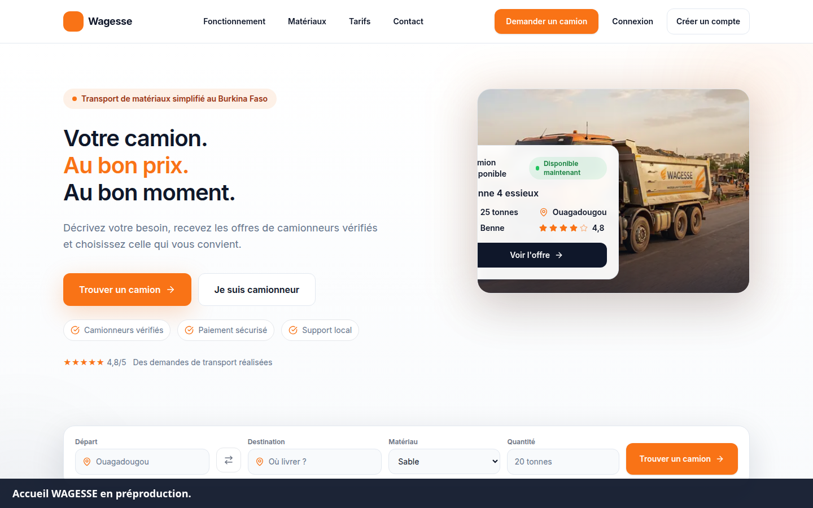

WAGESSE
Préproduction · 7 novembre 2026, 19:50 (Europe/Paris)
https://preprod.wagesse.fr
Code déployé 91e8235de45f3dfd58be558dc4636147d2a7d8df
Navigateur d'essai : Chromium
Recommandation : NO-GO pour la production.
Le certificat présenté est celui de preprod.wagesse.fr. Le paiement est manuel. PayDunya répond 403 à un webhook forgé. Quatre comptes fictifs ont été créés. L'administrateur initial n'a pas été modifié.
| Total | PASS | FAIL | BLOCKED | NOT IMPLEMENTED | Taux conclusif |
|---|---|---|---|---|---|
| 80 | 67 | 2 | 6 | 5 | 97.1 % |
Le taux est le nombre de PASS divisé par les scénarios PASS et FAIL. Les scénarios bloqués ou non implémentés ne sont pas comptés comme des réussites.
Clients 78001021 et 78001022. Transporteurs 78002021 et 78002022. Mots de passe absents de ce rapport. Voir COMPTES_RECETTE.md.
| ID | Fonctionnalité | Profil | Statut | Observé |
|---|---|---|---|---|
| ADM-CLIENT | Tableau de bord admin avec un client | client | PASS | HTTP 401 Forbidden |
| ADM-NOAUTH | Tableau de bord admin sans jeton | anonyme | PASS | HTTP 401 Unauthorized |
| ADM-TRUCKER | Liste utilisateurs avec un transporteur | trucker | PASS | HTTP 401 Forbidden |
| AUTH-BAD | Mot de passe incorrect | client | PASS | HTTP 401 Identifiants incorrects |
| AUTH-FORGOT | Mot de passe oublié | client | PASS | HTTP 429 dans la minute qui suit l'OTP d'inscription. Après 65 secondes : HTTP 200, smsDelivered false, aucun code dans la réponse. |
| AUTH-ME | Session courante | client | PASS | HTTP 200 status=ACTIVE id=cmw6rb2vy0003lbwxy7j18lsc role=CLIENT |
| AUTH-RESET | Réinitialisation avec un code faux | client | PASS | HTTP 400 Code invalide ou expiré |
| AUTH-ROLE | Refus du rôle admin à l'inscription | visiteur | PASS | HTTP 400 Invalid option: expected one of "CLIENT"|"TRUCKER" |
| AUTH-STILL | Mot de passe inchangé après faux code | client | PASS | HTTP 200 Connexion réussie |
| AUTH-VAL | Validation inscription | visiteur | PASS | HTTP 400 Numéro de téléphone invalide |
| CONT | Contacts client | client | PASS | HTTP 200 |
| CRD-BAL | Solde de crédits | client | PASS | HTTP 200 data_keys=['balance', 'purchased', 'subscription', 'subscriptionExpiresAt'] |
| CRD-PHONE | Achat de crédits sans téléphone vérifié | client | PASS | HTTP 403 Vérifiez votre numéro de téléphone avant cette opération. |
| LOGIN-client-a | Connexion client-a | CLIENT | PASS | HTTP 200 Connexion réussie verified=None |
| LOGIN-client-b | Connexion client-b | CLIENT | PASS | HTTP 200 Connexion réussie verified=None |
| LOGIN-trucker-a | Connexion trucker-a | TRUCKER | PASS | HTTP 200 Connexion réussie verified=None |
| LOGIN-trucker-b | Connexion trucker-b | TRUCKER | PASS | HTTP 200 Connexion réussie verified=None |
| PAGE/ | Page / | visiteur | PASS | HTTP 200 titre=Wagesse - Marketplace de Fret Burkina Faso octets=85390 |
| PAGE/abonnement | Page /abonnement | visiteur | PASS | HTTP 200 titre=Wagesse - Marketplace de Fret Burkina Faso octets=15214 |
| PAGE/admin | Page /admin | visiteur | PASS | HTTP 200 titre=Wagesse - Marketplace de Fret Burkina Faso octets=8353 |
| PAGE/auth/forgot | Page /auth/forgot | visiteur | PASS | HTTP 200 titre=Wagesse - Marketplace de Fret Burkina Faso octets=15942 |
| PAGE/auth/login | Page /auth/login | visiteur | PASS | HTTP 200 titre=Wagesse - Marketplace de Fret Burkina Faso octets=16608 |
| PAGE/auth/signup | Page /auth/signup | visiteur | PASS | HTTP 200 titre=Wagesse - Marketplace de Fret Burkina Faso octets=8062 |
| PAGE/cette-page-n-existe-pas | Page /cette-page-n-existe-pas | visiteur | PASS | HTTP 404 octets=8723 |
| PAGE/contact | Page /contact | visiteur | PASS | HTTP 200 titre=Wagesse - Marketplace de Fret Burkina Faso octets=16232 |
| PAGE/dashboard/client | Page /dashboard/client | visiteur | PASS | HTTP 200 titre=Wagesse - Marketplace de Fret Burkina Faso octets=23712 |
| PAGE/pricing | Page /pricing | visiteur | PASS | HTTP 200 titre=Wagesse - Marketplace de Fret Burkina Faso octets=35045 |
| PAY-MODE | Mode de paiement | public | PASS | HTTP 200 mode=MANUAL |
| PAY-PACKS | Catalogue de packs | public | PASS | HTTP 200 count=4 |
| PAY-WEBHOOK | Webhook PayDunya forgé | public | PASS | HTTP 403 PayDunya désactivé |
| PROF-C | Lecture profil client | client | PASS | HTTP 200 id=cmw6rb2w00005lbwxsnqmpcjh |
| PROF-C-UPD | Mise à jour profil client | client | PASS | HTTP 200 id=cmw6rb2w00005lbwxsnqmpcjh |
| PROF-ISO | Profil client demandé par un transporteur | trucker | PASS | HTTP 404 Customer profile not found |
| PROF-T | Mise à jour profil transporteur | trucker | PASS | HTTP 200 id=cmw6rb3go000blbwx7107ggc2 |
| QUO-A | Proposition de devis | trucker | PASS | HTTP 201 status=PENDING id=cmw6rb8wy000tlbwxui588oqq |
| QUO-ACC | Acceptation sans déblocage de contact | client | PASS | HTTP 402 You must unlock the quotes on this request before accepting one |
| QUO-B | Second devis | trucker | PASS | HTTP 201 status=PENDING id=cmw6rb94g000xlbwxp7od7ass |
| QUO-DUP | Second devis du même transporteur | trucker | PASS | HTTP 400 You have already quoted on this request |
| QUO-IDOR | Refus d'un devis par un autre client | client | PASS | HTTP 403 Unauthorized |
| QUO-MASK | Devis visibles avec contacts masqués | client | PASS | HTTP 200 count=2 phone_leak=False |
| QUO-REJ | Refus d'un devis par le client propriétaire | client | PASS | HTTP 200 status=REJECTED id=cmw6rb94g000xlbwxp7od7ass |
| QUO-WD | Retrait du devis restant | trucker | PASS | HTTP 200 status=WITHDRAWN id=cmw6rb8wy000tlbwxui588oqq |
| REQ-BROWSE | Consultation des demandes publiées | trucker | PASS | HTTP 200 found=True |
| REQ-CREATE | Création d'une demande | client | PASS | HTTP 201 status=DRAFT id=cmw6rb772000ilbwxsd3ea9nt status=DRAFT |
| REQ-IDOR | Lecture d'une demande d'un autre client | client | PASS | HTTP 403 Forbidden |
| REQ-ISO | Isolation des demandes entre clients | client | PASS | HTTP 200 count=0 leak=False |
| REQ-PUB | Publication de la demande | client | PASS | HTTP 200 status=PUBLISHED id=cmw6rb772000ilbwxsd3ea9nt status=PUBLISHED |
| REQ-VAL | Demande invalide | client | PASS | HTTP 400 Validation failed |
| SIGNUP-client-a | Inscription client-a | CLIENT | PASS | HTTP 201 Inscription réussie. Vérifiez votre numéro pour les opérations payantes. smsDelivered=False phoneVerificationRequired=True |
| SIGNUP-client-b | Inscription client-b | CLIENT | PASS | HTTP 201 Inscription réussie. Vérifiez votre numéro pour les opérations payantes. smsDelivered=False phoneVerificationRequired=True |
| SIGNUP-trucker-a | Inscription trucker-a | TRUCKER | PASS | HTTP 201 Inscription réussie. Vérifiez votre numéro pour les opérations payantes. smsDelivered=False phoneVerificationRequired=True |
| SIGNUP-trucker-b | Inscription trucker-b | TRUCKER | PASS | HTTP 201 Inscription réussie. Vérifiez votre numéro pour les opérations payantes. smsDelivered=False phoneVerificationRequired=True |
| SUB-PHONE | Achat de forfait sans téléphone vérifié | trucker | PASS | HTTP 403 Vérifiez votre numéro de téléphone avant cette opération. |
| SUB-PLANS | Catalogue de forfaits | public | PASS | HTTP 200 count=3 |
| UI-404 | Page inconnue | visiteur | PASS | 404 en anglais, sans l'habillage WAGESSE. Capture 04-404.png. |
| UI-ADMIN-ROLE | Page /admin avec un transporteur | trucker | PASS | Retour au tableau de bord transporteur. L'API admin répond 401. Capture 21-admin-refuse.png. |
| UI-BROWSE | Liste transporteur | trucker | PASS | Gravier de recette, 18 tonnes, Ouagadougou vers Koudougou. Capture 19-transporteur-demandes.png. |
| UI-BUY | Confirmation d'achat sans numéro vérifié | client | PASS | La page explique le règlement manuel. Le bouton affiche : vérifiez votre numéro. Capture 22-achat-refuse.png. |
| UI-DASH | Tableau de bord client avec session | client | PASS | 1 demande publiée, 0 mission, solde 0. Capture 10-client-tableau.png. |
| UI-FORM | Formulaire de demande | client | PASS | Formulaire affiché. Capture 12-client-nouvelle-demande.png. |
| UI-MOBILE | Accueil mobile 390 px | visiteur | PASS | Capture 05-accueil-mobile.png, Chromium. |
| UI-TABLET | Tarifs tablette 768 px | visiteur | PASS | Capture 06-tarifs-tablette.png, Chromium. |
| UI-VEH | Véhicule dans l'interface | trucker | PASS | RC-A-D47F, benne, 20 t. Capture 18-transporteur-vehicules.png. |
| UNL-PHONE | Déblocage de contacts sans téléphone vérifié | client | PASS | HTTP 403 Vérifiez votre numéro de téléphone avant cette opération. |
| VEH-A | Ajout d'un véhicule | trucker | PASS | HTTP 201 id=cmw6rb88y000plbwxfow229jd |
| VEH-B | Ajout d'un second véhicule | trucker | PASS | HTTP 201 id=cmw6rb8hj000rlbwxsvwlt5qp |
| VEH-ISO | Isolation des véhicules | trucker | PASS | own=1 hasA=True hasB=False |
| SEC-HDR | En-têtes HTTP de durcissement | public | FAIL | Réponse nginx/1.24 avec x-powered-by: Next.js. Pas de strict-transport-security, x-content-type-options ni x-frame-options. |
| UI-LOGIN | Connexion dans le navigateur | client | FAIL | Le jeton est créé, puis l'interface ouvre /auth/verify. Le SMS n'est pas parti. Capture 08-verification-sms.png. |
| ADM-AUTH | Connexion administrateur de recette | admin | BLOCKED | L'inscription publique refuse le rôle ADMIN. Le mot de passe de l'administrateur déjà en place n'a pas été modifié ni lu. |
| ADM-DASH | Tableau de bord et écrans admin authentifiés | admin | BLOCKED | Pas de session administrateur disponible. |
| BKP | Sauvegarde et restauration MariaDB | exploitation | BLOCKED | Non exécutée : elle exigerait un accès root et une base jetable. La base de préproduction n'a pas été restaurée ni effacée. |
| BRW-OTHER | Firefox et Safari | visiteur | BLOCKED | Seul Chromium, livré avec Playwright, a été utilisé. |
| MIS-ACC | Acceptation d'un devis et création de mission | client | BLOCKED | HTTP 402 : le déblocage du contact est exigé. Ce déblocage exige un téléphone vérifié (HTTP 403). |
| PAY-CYCLE | Cycle complet de paiement manuel | client et admin | BLOCKED | L'achat est refusé tant que le téléphone n'est pas vérifié. Le SMS n'est pas délivré et la simulation est interdite. La validation admin n'a donc pas été exécutée. |
| ADM-STUB | Rôles, contenus, matériaux, promotions, types de camions | admin | NOT IMPLEMENTED | Les pages du code affichent « en cours de construction ». Non ouvertes avec un admin. |
| LEG-PRIV | Confidentialité /privacy et /legal/privacy | visiteur | NOT IMPLEMENTED | HTTP 404 sur la préproduction déployée. |
| LEG-TERMS | Mentions légales /terms et /legal/terms | visiteur | NOT IMPLEMENTED | HTTP 404 sur la préproduction déployée. |
| NOTIF-USER | Notifications côté client | client | NOT IMPLEMENTED | Pas de route /api/notifications. L'écran existe seulement dans l'administration. |
| ROLE-OP | Profil opérateur | operator | NOT IMPLEMENTED | Le rôle existe dans le schéma. L'inscription ne propose que CLIENT et TRUCKER. L'opérateur est routé comme un client. |
Les captures sont dans docs/recette/preuves. Les vidéos sont dans docs/tutorials.



Les contrôles d'accès entre clients et transporteurs ont réussi. Le cycle de validation admin et les doubles crédits n'ont pas été exécutés. Détail : docs/security/AUDIT_SECURITE.md.
NO-GO. La production ne doit pas être ouverte tant que le parcours admin de paiement manuel n'a pas été vu de bout en bout, que le SMS ou une procédure équivalente permet de vérifier un numéro, et que les pages légales ainsi que le correctif de connexion sont déployés. Cette décision n'autorise aucun basculement de domaine.
Client : expéditeur d'une demande. Transporteur : camionneur qui dépose un devis. Crédit : droit de débloquer un contact. Commande manuelle : demande de paiement enregistrée, sans encaissement automatique.